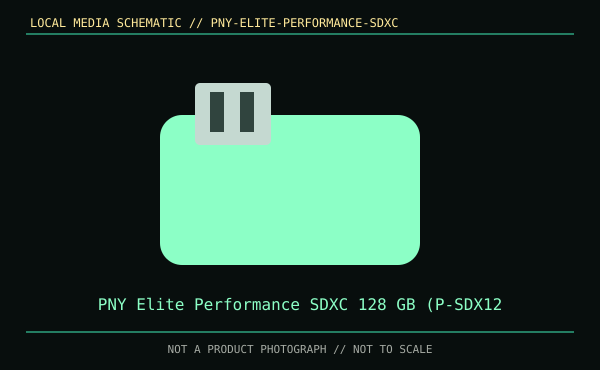

[ REMOVABLE MEDIA // PRODUCT RECORD ]
PNY Elite Performance SDXC 128 GB (P-SDX128U395-GE)
Catalog entry for the removable storage medium itself, not a drive or reader. Confirm the complete model marking and the host's manual before use.

MEDIA ONLY: PNY Elite Performance SDXC 128 GB (P-SDX128U395-GE). The named capacity/format and compatibility are limited to this model and generation; the drive or reader is separate.
Capacity, format and compatibility
| Manufacturer model / format | SDXC UHS-I memory card; P-SDX128U395-GE |
|---|---|
| Nominal capacity | 128 GB. Usable space varies with formatting and system-reserved capacity. |
| Reader or drive support | Use an SDXC-capable UHS-I host; reader/camera limits and filesystem support determine compatibility. |
| Write protection | Full-size SD lock slider is mechanical and reader-detected; it does not itself prevent every write-capable reader. |
| Revision and compatibility limit | Match the printed part number, standard revision, capacity class, media generation, host manual, and (where relevant) drive firmware. Connector or shell fit by itself does not demonstrate compatibility. |
Handling, longevity and preservation
No finite shelf-life or archival-life guarantee is claimed here: media longevity depends on the specific medium, age, environment, use, and condition. Keep original labels and packaging, avoid contamination and unapproved handling, inventory the exact model and generation, and periodically read/verify contents. Keep multiple independent copies and checksums; refresh or migrate data before media or reader support becomes unavailable.
- Keep the medium clean, dry, labeled, and in its protective case or cap. Avoid touching contacts or exposed recording surfaces; do not write while the host is busy or remove during activity.
- Use the documented mechanical lock or host-level read-only mode where available, but do not treat it as a substitute for a verified backup.
- Record the exact reader/drive, host, firmware, filesystem, model, and any write-protect state used during recovery or migration.
Sources and standards
- PNY — Elite Performance SDXC cardUse this source to verify the named product or format; confirm the full model label and host manual before use.
- USB Implementers Forum — USB specifications and terminologyUse this source to verify the named product or format; confirm the full model label and host manual before use.
- SD Association — SD family, capacity classes, and bus modesUse this source to verify the named product or format; confirm the full model label and host manual before use.
- Library of Congress — Digital preservation formatsUse this source to verify the named product or format; confirm the full model label and host manual before use.
Product capacities and part identifiers are model-specific. Standards explain format families; the manufacturer's documentation for the exact SKU and host manual govern compatibility.